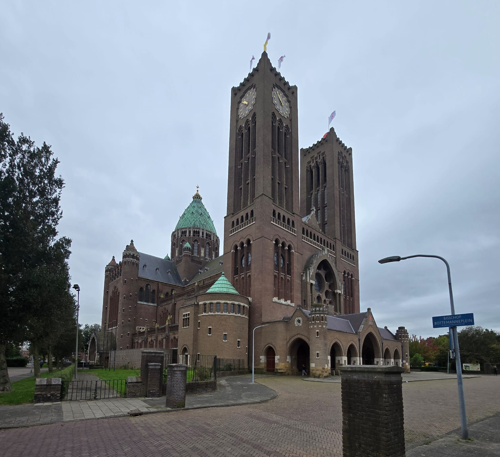
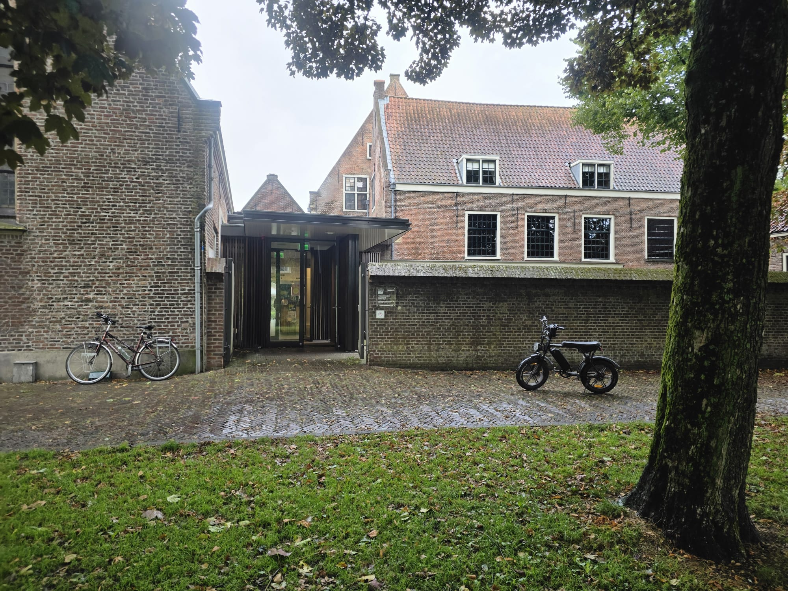
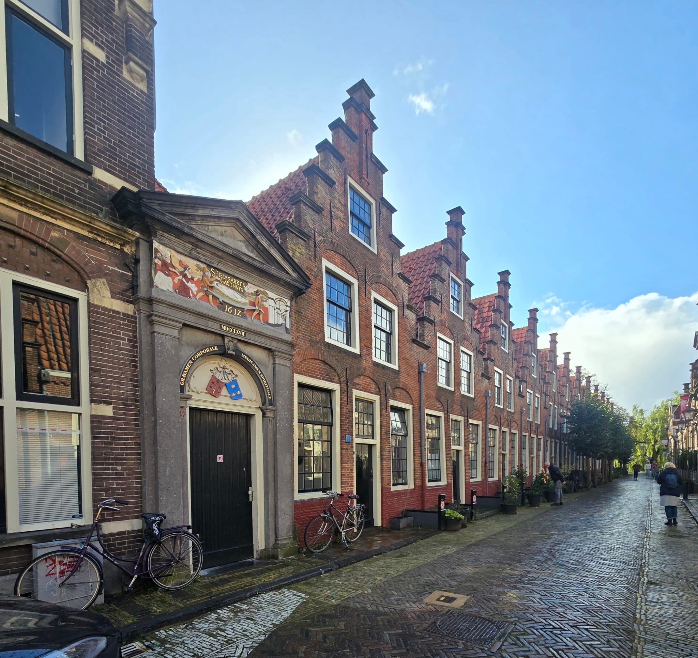
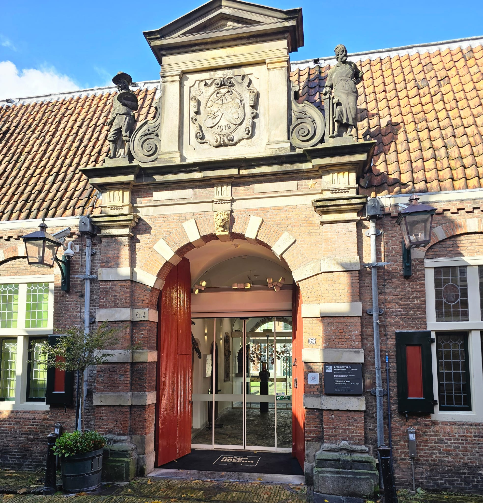

(historically St. Bavo Cathedral ) is a late medieval church building in
the Dutch city of Haarlem, located on the Grote Markt. It was dedicated to
Saint Bavo until the Reformation. The medieval cruciform church (construction period 1370-1520), which
stands in the middle of the old city center, was built in the Brabant Gothic architectural style. On
the cross of transept and nave stands a 78-meter-high wooden, lead-covered, late Gothic crossing tower.
The church is among the' Top 100 of the National Service for the Preservation of Monuments' from 1990.
Click here for more information:
https://nl.wikipedia.org/wiki/Grote/ofSint/Bavokerk.

Cathedral church.
2-The Cathedral of Saint Bavo
is a cathedral in Haarlem, the Netherlands, built by Joseph Cuypers from 1895 to 1930 to replace the former
waterstaatskerk in the Jansstraat called the St. Joseph. That church was itself a replacement for
the Sint-Bavokerk, that had been converted to Protestantism from Catholicism in 1578. The Cathedral of
Saint Bavo now serves as the main cathedral for the Roman Catholic Diocese of Haarlem-Amsterdam.
Within the cathedral, the former sacristy has been converted into a small museum (schatkamer)
containing historical artefacts from Haarlem's Catholic past. Click here for more information:
https://en.m.wikipedia.org/wiki/Cathedral/of/StBavo/Haarlem.

This is a picture of Geest museum.
3-The Museum van de Geest
this museum focuses on the human mind and mental health, exploring topics like psychology, mental health care,
and neurological sciences. It covers various aspects of mental health history and current practices, using personal
stories, art, and interactive exhibits to raise awareness of mental well-being and societal inclusion.
The museum also delves into "Outsider Art," a unique art form created by artists outside the traditional art scene,
often with mental health or neurological conditions. In addition to its art collection, it showcases historical objects
related to mental healthcare, such as therapeutic tools and documents from psychiatric institutions(JTravel)(Museum.nl).
One of the most intriguing parts of the museum is its history as the Dolhuys, a former leper, plague, and insane asylum.
Visitors can even experience a 16th-century "dolcel," a room used for isolating mentally ill patients
Visit Haarlem(Museum.nl)
The museum was awarded "European Museum of the Year" in 2022, making it a must-see for anyone interested in understanding the mind and
mental health throughout history(Visit Haarlem) Address:Schotersingel 2, 2021 GE Haarlem

Picture of Elisabeth gasthuis.
4-The Elisabeth Gasthuis
often referred to as St. Elisabeth Gasthuis (EG), is a historic hospital with roots dating back to the Middle Ages.
Founded in 1581, it was originally a charitable hospital providing care for the sick and poor, like many "gasthuizen"
in the Netherlands. It is named after Saint Elisabeth of Hungary, who was known for her devotion to helping the needy.
Over the centuries, the Elisabeth Gasthuis expanded and modernized to accommodate advances in medical care, transitioning
from a small charity hospital to a more advanced healthcare facility. In the 20th century, it became part of a broader
network of healthcare institutions in Haarlem.
Today, the original site no longer functions as a hospital in the traditional sense. However, the legacy of
the Elisabeth Gasthuis lives on, as its name and history are tied to various healthcare services in the region.
Parts of the building have been repurposed, and the institution continues to be remembered as a key player in Haarlem's healthcare history.
Click here for more information:Grote of Sint-Bavokerk - Wikipedia. Address:Reinaldapad 10, 2033 SX Haarlem

Frans hals.
5-The Frans Hals
Museum (formerly Stedelijk Museum van Haarlem) is a museum in the North Holland city of Haarlem, founded in 1862, known as
the Art Museum of Haarlem. Its collection is based on the city's own rich collection, built up from the 16th century onwards.
The museum owns hundreds of paintings, including more than a dozen by Frans Hals to whom the museum owes its name.
The Frans Hals Museum has two historic locations in Haarlem city centre: the main location on Groot Heiligland and
Location Hal on Grote Markt, composed of the adjacent 17th-century Vleeshal and 19th-century Verweyhal.
On Groot Heiligland is the 17th-century Oudemannenhuis with regent's rooms. It houses the famous paintings
by Frans Hals and other ancient, modern and contemporary art, as well as the museum café. Location Hal regularly hosts exhibitions of modern and contemporary art.
We use cookies to ensure you get the best experience on our website.
AcceptDecline